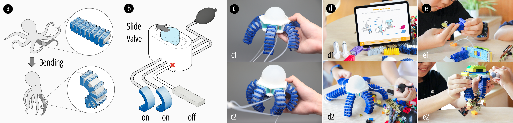

Kipneu
 Figure: Figure 1: Overview of the learning process in KiPneu: (a-b) Demonstrating the design library of primary deformation modules and the functions of tangible valves; (c-d) Offering an instructional interface of the assembly results for user learning and imitation; (e) Supporting creations based on the knowledge conveyed by the animal locomotion.Abstract
Biomimicry, a methodology adapted from nature, always inspires optimum solutions and innovative technologies in human history. To get children interested in, excited about, and inspired by biomimicry, we introduce KiPneu, a robotic platform that facilitates biomimicry education through hands-on, solution-oriented learning and a digital learning environment. KiPneu allows children to mimic flexible animal locomotion, like fish swimming or worm squirming, using low-cost building blocks and non-electrical pneumatic actuators. We provide five types of non-electrical tangible valves to adjust robot motion characteristics, such as direction and speed, through engaging tangible programming. Additionally, to facilitate the whole learning process, KiPneu comes with interactive instructional interface that visualize and simulate the pneumatic system. To validate KiPneu's educational efficacy, we conducted a three-day workshop with 21 children aged 5-12. Pre-and-post surveys revealed KiPneu not only enhanced their understanding of animal locomotion mechanisms but also spurred interest in creative construction using acquired knowledge.
For more details, please refer to the video and paper linked at the bottom of this page.
Authors
Guanyun Wang, Chenda Zheng, Yanbo Fu, Kuangqi Zhu, Fuyi Lai, Likang Zhang, Mengyang Li, Xiaoyang Wu, Muyi Ren, Yanpei Zheng, Boyi Lian, Kexin Zhang, Qi Wang, Cheng Yao, Shijian Luo, Fangtian Ying, Lingyun Sun, Ye Tao
Publication Information
Conference: DIS '24 (Proceedings of the 2024 ACM Designing Interactive Systems Conference)
Date: 01 July 2024
DOI: 10.1145/3643834.3661828
Notes
This was my first project in the fabrication field, where I primarily provided visual support while also learning a great deal about fabrication techniques. I am deeply grateful to Dr. Yang for her invitation and guidance throughout this project, as well as to Master's student Zheng for his invaluable mentorship and support. Through this experience, I gained a solid foundation in Human-Computer Interaction (HCI) and fabrication methods. I also learned how to transform an initial idea into a comprehensive research project and how to effectively collaborate within a team. These skills have been instrumental in preparing me to lead future research initiatives and tackle complex design challenges with confidence.